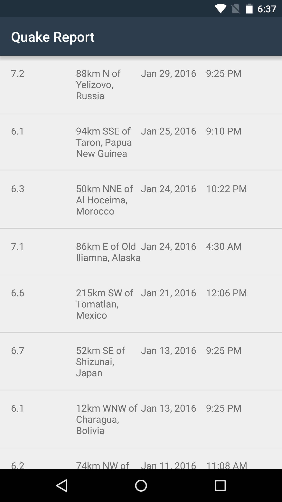

20. Quiz: Display date and time of earthquake
Quiz: Display date and time of earthquake
Your Turn
Since the SimpleDateFormat.format() method requires a Date object, which in turn requires a long as input, we should extract the time of the earthquake from the JSON response as a long data type (instead of a String). Long is one of the 8 primitive data types in Java here.
Modify the QueryUtils.extractEarthquakes() method to extract the time of the earthquake as a “long” data type from the JSON response.
// Extract the value for the key called "time"
long time = properties.getLong("time");
This causes a ripple effect and we need to update other places in the app as well.
Quiz: Display date and time of earthquake
SOLUTION:
- In QueryUtils class, extract time as a long when parsing the JSON response
- In Earthquake class, store time as a long
- Create Date object from time in milliseconds
- Use SimpleDateFormat to format the date and time into readable Strings
- Update list item layout to show date and time in 2 separate TextViews
Solution:
First, let’s modify the QueryUtils extractEarthquakes() method to extract time as a long data type from the JSON response.
In the QueryUtils extractEarthquakes() method:
// Extract the value for the key called "time"
long time = properties.getLong("time");This will cause an error because the Earthquake constructor doesn’t accept a long data type as the third input parameter. Hence, we need to make some changes to the Earthquake class.
Change the data type of the global variable, and rename it so the name is more descriptive of the information stored inside.
In Earthquake.java:
/** Time of the earthquake */
private long mTimeInMilliseconds;Modify the Earthquake constructor so that it takes a long data type for the time and update the Javadoc comments.
In Earthquake.java:
/**
* Constructs a new {@link Earthquake} object.
*
* @param magnitude is the magnitude (size) of the earthquake
* @param location is the city location of the earthquake
* @param timeInMilliseconds is the time in milliseconds (from the Epoch) when the
* earthquake happened
*/
public Earthquake(String magnitude, String location, long timeInMilliseconds) {
mMagnitude = magnitude;
mLocation = location;
mTimeInMilliseconds = timeInMilliseconds;
}Update the public getter method so that a long data type is returned.
In Earthquake.java:
/**
* Returns the time of the earthquake.
*/
public long getTimeInMilliseconds() {
return mTimeInMilliseconds;
}When the EarthquakeAdapter creates list items for each earthquake, the adapter must convert the time in milliseconds into a properly formatted date and time. There are now 2 TextViews that display date and time separately, so we need to modify the earthquake_list_item.xml layout to add another TextView and give it an appropriate view ID.
In earthquake_list_item.xml:
<LinearLayout xmlns:android="http://schemas.android.com/apk/res/android"
xmlns:tools="http://schemas.android.com/tools"
android:layout_width="match_parent"
android:layout_height="match_parent"
android:orientation="horizontal"
android:padding="16dp">
<TextView
android:id="@+id/magnitude"
android:layout_width="0dp"
android:layout_height="wrap_content"
android:layout_weight="1"
tools:text="8.9" />
<TextView
android:id="@+id/location"
android:layout_width="0dp"
android:layout_height="wrap_content"
android:layout_weight="1"
tools:text="San Francisco, CA" />
<TextView
android:id="@+id/date"
android:layout_width="0dp"
android:layout_height="wrap_content"
android:layout_weight="1"
tools:text="Mar 6, 2010" />
<TextView
android:id="@+id/time"
android:layout_width="0dp"
android:layout_height="wrap_content"
android:layout_weight="1"
tools:text="3:00 PM" />
</LinearLayout>Within the EarthquakeAdapter, we modify the getView() method to produce the formatted strings to display in the corresponding TextViews. We get the time from the current Earthquake object, using currentEarthquake.getTimeInMilliseconds(), and pass that into the Date constructor to form a new Date object.
In EarthquakeAdapter.java:
public View getView(int position, View convertView, ViewGroup parent) {
// Check if there is an existing list item view (called convertView) that we can reuse,
// otherwise, if convertView is null, then inflate a new list item layout.
View listItemView = convertView;
if (listItemView == null) {
listItemView = LayoutInflater.from(getContext()).inflate(
R.layout.earthquake_list_item, parent, false);
}
// Find the earthquake at the given position in the list of earthquakes
Earthquake currentEarthquake = getItem(position);
// Find the TextView with view ID magnitude
TextView magnitudeView = (TextView) listItemView.findViewById(R.id.magnitude);
// Display the magnitude of the current earthquake in that TextView
magnitudeView.setText(currentEarthquake.getMagnitude());
// Find the TextView with view ID location
TextView locationView = (TextView) listItemView.findViewById(R.id.location);
// Display the location of the current earthquake in that TextView
locationView.setText(currentEarthquake.getLocation());
// Create a new Date object from the time in milliseconds of the earthquake
Date dateObject = new Date(currentEarthquake.getTimeInMilliseconds());
// Find the TextView with view ID date
TextView dateView = (TextView) listItemView.findViewById(R.id.date);
// Format the date string (i.e. "Mar 3, 1984")
String formattedDate = formatDate(dateObject);
// Display the date of the current earthquake in that TextView
dateView.setText(formattedDate);
// Find the TextView with view ID time
TextView timeView = (TextView) listItemView.findViewById(R.id.time);
// Format the time string (i.e. "4:30PM")
String formattedTime = formatTime(dateObject);
// Display the time of the current earthquake in that TextView
timeView.setText(formattedTime);
// Return the list item view that is now showing the appropriate data
return listItemView;
}The above code includes two helper methods, formatDate() and formatTime(), that we created to accept a Date object and return an appropriately formatted date string using SimpleDateFormat.
/**
* Return the formatted date string (i.e. "Mar 3, 1984") from a Date object.
*/
private String formatDate(Date dateObject) {
SimpleDateFormat dateFormat = new SimpleDateFormat("LLL dd, yyyy");
return dateFormat.format(dateObject);
}
/**
* Return the formatted date string (i.e. "4:30 PM") from a Date object.
*/
private String formatTime(Date dateObject) {
SimpleDateFormat timeFormat = new SimpleDateFormat("h:mm a");
return timeFormat.format(dateObject);
}With all these changes in place, the app should look like the following screenshot when we run it on our device. Note that it takes many rounds of trial/error to make the formatting look precisely as we wanted. It didn’t take just one try to get all the code to run perfectly.

Great job! The date and time of the earthquake are looking much more readable now!